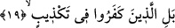

ordularının kıssasını duymuşlar, Hz. Salih (a.s.)’ın kavmi olan Semud’un helâk ediliş
izlerini kendi topraklarında görmüşlerdi. Çünkü bu izler onların gelip geçtikleri yollar
üzerinde ve yaşadıkları diyarlarda bulunuyordu. Okuduğumuz âyette tarih sırasına göre
Semud, Fir’avn’dan daha önce yaşadığı halde sonraya bırakılmıştır. Bunun sebebi âyet
sonlarındaki ses uyumuna riâyet etmektir.
Kâşânî okuduğumuz âyete şöyle mânâ veriyor: Sana mahrum olan insanların haberi
geldi mi? Bu mahrumlar ya Fir’avn ve onun dini üzere yaşayan kimselerde olduğu gibi
enaniyet neticesinde mahrumdurlar. Ya da Semud ve onları izleyenlerde olduğu gibi âsâr
ve ağyâr ile meşgul olmaktan dolayı mahrumdurlar.
19. Doğrusu inkârcılar (gerçeği) yalanlayıp dururlar.
“Doğrusu” senin kavminden olan o “inkârcılar (gerçeği) yalanlayıp dururlar.” Bu
ifâde Peygamber Efendimiz’in kavminin Fir’avn ve Semud kavmine benzerlikleri
vurgusundan başka bir vurguya geçiyor ve onların küfürde, azgınlıkta daha beter
olduklarını beyân ediyor.
Bu âyette “tekzib” kelimesinin nekre yapılması “yalanlama”nın büyük bir yalanlama
olduğunu vurgulamak içindir. Şu halde burada âdetâ şöyle denmiş oluyor: Senin kavmin
bu konuda Fir’avn ve Semud kavmi gibi değildirler. Tam tersine azabı hak etmiş olmak
noktasında ve cezâya çarptırılma konusunda onlardan daha beterdirler. Çünkü senin
kavmin bunları dile getiren Kur’an’ı şiddetli bir biçimde yalan saymaya devam
ediyorlar. Fakat onların azabı hak etmelerinin nedeni Kur’an’da işâret edilen bu
olayların geçmişte meydana geldiğini yalan saymalarından değil tam tersine onlar bu
olayları dile getiren kitabın Allah’ın katından gelen bir Kur’an olduğunu
yalanlamalarından dolayıdır. Oysa bu kitabın Allah katından geldiği apaçıktır ve kitabı
destekleyen apaçık deliller vardır.
et-Te’vilâtü’n-Necmiyye’de şöyle deniyor: O kâfirlerin bir yalanlama içinde olmaları
yaratılışlarının ve cibilliyetlerinin yalan ve yalanlama sıfatı üzere olmasından dolayıdır.
Herhangi bir kimse bir sıfat ve nitelik üzerine yaratılmışsa o sıfattan ayrılamaz. Ancak
kemal derecesini yakalamış az bir grup bunu becerebilir. Nitekim Allah bu gerçeği bir
âyet-i kerimede şu şekilde dile getiriyor: “Bir kimseye Allah nur (yetenek)
vermemişse artık o kimsenin aydınlıktan nasibi yoktur.” (Nur 24/40)
Bir kimsenin tabiatına kötülük yerleşmişse
Ölüm vakti gelmedikçe onun elinden kurtulamaz.
Bu âyette hak ehlini inkâr edip yalan sayıcılara ve onların kendi hallerine mahrumiyet